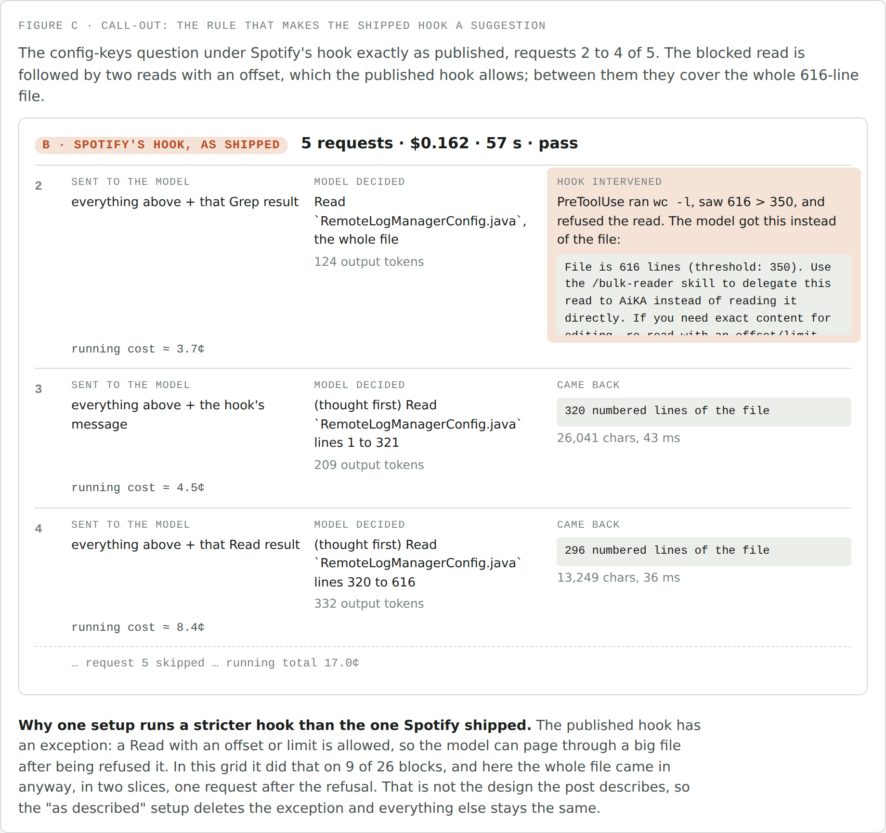
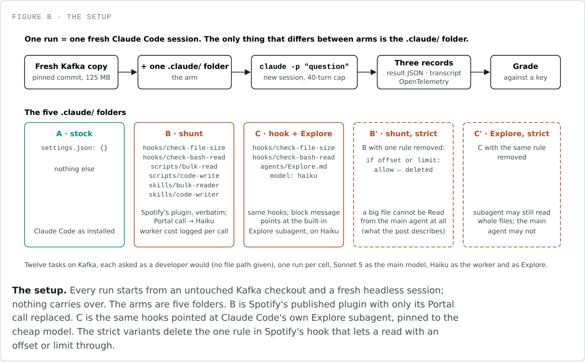
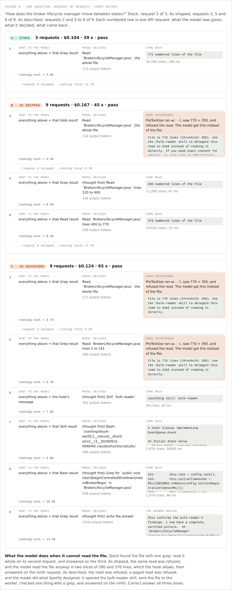
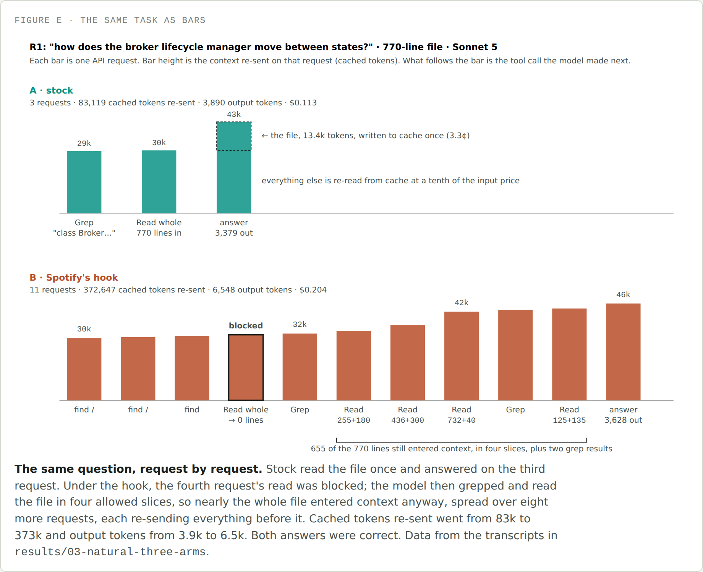

<title>Tokens Are Cheap, Turns Are Not</title>
<meta name="description" content="Spotify published a Claude Code plugin that blocks big file reads and hands them to a cheap model, claiming a 90% token cut. I rebuilt it on Kafka and measured the bill instead of the tokens.">
<link rel="stylesheet" href="https://fonts.googleapis.com/css2?family=IBM+Plex+Sans:wght@400;500;600&family=IBM+Plex+Mono:wght@400;500&display=swap">
<style>
  :root { --bg:#F5F6F3; --surface:#FFFFFF; --ink:#1B1F1D; --ink-2:#4A5350; --ink-3:#7B857F; --line:#D6DAD3; --stock:#0A9385; --hook:#B84E28; --soft:#ECEEE9; --tip:#EDF3EC; --tip-b:#5B8A6B; }
  @media (prefers-color-scheme: dark) { :root:not([data-theme="light"]) { --bg:#141816; --surface:#1C211E; --ink:#E6E9E4; --ink-2:#B4BBB5; --ink-3:#7F8882; --line:#313834; --stock:#1E9A8C; --hook:#C97440; --soft:#232925; --tip:#1B2420; --tip-b:#4E8760; } }
  :root[data-theme="dark"] { --bg:#141816; --surface:#1C211E; --ink:#E6E9E4; --ink-2:#B4BBB5; --ink-3:#7F8882; --line:#313834; --stock:#1E9A8C; --hook:#C97440; --soft:#232925; --tip:#1B2420; --tip-b:#4E8760; }
  * { box-sizing: border-box; }
  body { background:var(--bg); color:var(--ink); font-family:"IBM Plex Sans",system-ui,sans-serif; font-size:17px; line-height:1.65; padding-block:44px 90px; padding-inline:20px; }
  main { max-width:700px; margin:0 auto; }
  .kicker { font-family:"IBM Plex Mono",monospace; font-size:0.78rem; letter-spacing:0.08em; text-transform:uppercase; color:var(--ink-3); margin:0 0 10px; }
  h1 { font-size:2.1rem; line-height:1.2; margin:0 0 6px; letter-spacing:-0.01em; }
  .dek { font-size:1.15rem; color:var(--ink-2); margin:0 0 36px; max-width:56ch; }
  h2 { font-size:1.5rem; margin:56px 0 16px; letter-spacing:-0.005em; }
  h3 { font-size:1.1rem; margin:28px 0 10px; }
  p { margin:0 0 20px; }
  a { color:var(--hook); text-decoration-thickness: 1px; }
  em { font-style: italic; }
  .lede-em { font-style: normal; font-weight: 600; }
  code { font-family:"IBM Plex Mono",monospace; font-size:0.88em; background:var(--soft); padding:0.1em 0.35em; border-radius:4px; }
  pre.code { background:var(--soft); border-radius:8px; padding:14px 18px; overflow-x:auto; font-family:"IBM Plex Mono",monospace; font-size:0.82em; line-height:1.6; margin:8px 0 20px; color:var(--ink); }
  pre.code code { background:none; padding:0; font-size:1em; }
  pre.code .c { color:var(--ink-3); }
  figure { margin:32px 0; }
  figure img { width:100%; display:block; border:1px solid var(--line); border-radius:8px; background:var(--surface); }
  figcaption { font-family:"IBM Plex Mono",monospace; font-size:0.72rem; letter-spacing:0.05em; text-transform:uppercase; color:var(--ink-3); margin-top:10px; }
  .callout { border-left:3px solid var(--tip-b); background:var(--tip); border-radius:0 8px 8px 0; padding:16px 20px; margin:28px 0; }
  .callout .label { font-family:"IBM Plex Mono",monospace; font-size:0.72rem; letter-spacing:0.06em; text-transform:uppercase; color:var(--tip-b); display:block; margin-bottom:8px; font-weight:600; }
  .callout p:last-child { margin-bottom:0; }
  .callout.hook { border-left-color:var(--hook); }
  .callout.hook .label { color:var(--hook); }
  blockquote.tldr { border:none; margin:24px 0; padding:0 0 0 18px; border-left:2px solid var(--line); font-style:italic; color:var(--ink-2); }
  ul, ol { padding-left: 1.3em; margin: 0 0 20px; }
  li { margin-bottom: 10px; }
  li b { color: var(--ink); }
  .terms b { font-family:"IBM Plex Mono",monospace; font-weight:600; background:none; }
  hr.sec { border:none; border-top:1px solid var(--line); margin:48px 0; }
  .byline { color:var(--ink-3); font-size:0.9rem; margin: -16px 0 40px; }
  @media (max-width: 480px) { h1 { font-size: 1.7rem; } h2 { font-size: 1.3rem; } body { font-size: 16px; } }
</style>

<main>

<p class="kicker">Field dispatch</p>
<h1>Tokens Are Cheap, Turns Are Not</h1>
<p class="dek">Spotify published a Claude Code plugin that blocks the model from reading big files and hands them to a cheap worker instead, claiming a 90% cut in tokens. I rebuilt it on a real repo and measured the bill. The number they reported is real. The bill went up anyway.</p>
<p class="byline">Twenty-one tasks, three Claude Code setups, 189 offline sessions on one Java monorepo, three independent sources of telemetry per run.</p>

<p>I feel like everyone's caught wind of the term <em>tokenomics</em> recently. From customer calls to consultants' LinkedIn posts, people are getting more and more cognizant of AI spend and looking for a better way to quantify it. It can't just be priced per question, flat — we have to think about question complexity and model power together, and lately, teams have started measuring that complexity in tokens needed. Makes sense.</p>

<p>That's led a lot of cost-wary teams to start building their own token optimizers. Seeing the trend take off, I wanted to dig into one of these examples myself. Last week, Spotify published a blog post that bounced around Hacker News and Reddit, about a Claude Code plugin claiming a 90% cut in tokens. So in this piece, I'm taking you with me as we rebuild it and look under the hood.</p>

<p>This one runs longer than my usual, because I want you to be able to check my work. It's laid out the way a paper would be: what Spotify built, how I designed the test, exactly how I set it up so you can run it yourself, what came out, and what I think it means. If you only want the answer, the TLDR is next and the results are in section 4.</p>

<blockquote class="tldr">TLDR; the token reduction Spotify reported is real on the metric they used: with their hook enforced, Claude read 87% fewer lines of the big files. The tokens the frontier model was actually billed for went up 41%, and the dollar cost went up 8% with the plugin as they shipped it and 19% with the hook doing what their post describes, at the same pass rate. Whether a given task came out cheaper was decided by the task, not by the plugin: when the answer is a slice of a big file, blocking the read saves money; when the answer is most of the file, it costs money. A line count can't tell those apart.</blockquote>

<ol>
<li><a href="#s1">What Spotify built, and why</a></li>
<li><a href="#s2">Experiment design</a></li>
<li><a href="#s3">Implementation: how to run this yourself</a></li>
<li><a href="#s4">Results</a></li>
<li><a href="#s5">Discussion</a></li>
</ol>

<h2 id="s1">1. What Spotify built, and why</h2>

<p><b>The why:</b> the Spotify team noticed a trend in their own Claude Code usage — a huge share of the tokens they were burning went toward tasks that didn't actually need the frontier-level reasoning power they were paying for. Spotify works out of one large monorepo, and inside it, most of that non-reasoning work fell into two buckets:</p>

<ul>
<li><b>Bulk file reads</b>: loading a 700-plus-line file into context just to check a pattern or answer a question about a fraction of it.</li>
<li><b>Templated code generation</b>: writing boilerplate, configs, or scaffolding where the structure is already known.</li>
</ul>

<p>Because Claude Code resends the whole conversation on every request, any large file that's entered context once stays there and keeps getting rebilled on every request after it, however many turns that ends up being. Spotify didn't want to keep paying frontier prices to carry around the parts of a file nobody actually asked about.</p>

<p><b>The what:</b> to fix it, Spotify built a more deterministic workflow for exactly those two task types — send the request to a smaller model to process, and hand Claude Code back only the key context it actually needs. They picked a Gemini model for the worker (other coverage of the post names Gemini 2.5 Flash), reading the large file in full and returning just the parts that matter. They published the plugin, called <em>shunt</em>, in their <a href="https://github.com/spotify/portal-ai-plugins/tree/b5ed620c6850f1ea7327b7cd9d0696aae0bf2d89/plugins/shunt">portal-ai-plugins</a> repository, which is what everything below is built on.</p>

<figure>
  
  <figcaption>Figure A · shunt's two delegation paths, at a glance</figcaption>
</figure>

<p>They were able to implement this deterministic workflow using two key Claude Code features:</p>

<ol>
<li><b>Skills</b>: progressive disclosure of context, loading instructions into the context window only when needed.</li>
<li><b>Hooks</b>: a checkpoint in front of a tool call, able to block or redirect it before the model ever sees the result.</li>
</ol>

<p>In Spotify's case, they built two skills — bulk-reader and code-writer — that get disclosed when a request matches one of the two workflows above. They're really just a set of instructions for how to hand a task off to the cheaper model and what to do with what comes back.</p>

<p>As for hooks, this is how the team put a guardrail on their deterministic workflow. They used a <em>PreToolUse hook</em> that runs before Claude Code lets a <code>Read</code> call through, checking the file's line count first. Over 350 lines, it blocks the call outright and points the model at the bulk-reader skill instead of the raw file. A skill only helps if the model chooses to open it — the hook is what's supposed to force that choice.</p>

<blockquote class="tldr">TLDR; the skill is the manual. The hook is what's supposed to force the model to open it. Whether that actually holds is the seam this whole post pulls on.</blockquote>

<p><b>Their evaluation:</b> Spotify measured the win as tokens avoided: estimate the file's token cost as its character count divided by four, then subtract the size of the summary that comes back instead. The worker's own cost never enters that number at all. That's roughly a 90% drop in tokens sent to the frontier model, and by the ordinary logic of token pricing, fewer tokens to the expensive model reads as a proportionally smaller bill. That equivalence — a token avoided is a dollar saved — is exactly what the rest of this post tests.</p>

<p>That design rests on one assumption: that when the model is refused a read, it does what the hook's message tells it to do. Nothing about a <code>PreToolUse</code> hook enforces that — it can stop one tool call, but it can't stop the model from trying something else on its next turn, and it has no say over what that something else is. Whether the plugin saves anything comes down entirely to what the model reaches for once it's been told no. I wanted to find out, on a real repo, doing real work.</p>

<h2 id="s2">2. Experiment design</h2>

<p>Three terms, defined once and used the same way for the rest of the piece. A <em>setup</em> is one configuration of Claude Code, and there are three. A <em>turn</em> is one API request: the whole conversation so far, plus whatever just happened, sent to the model, which answers with a tool call or a final answer. A <em>block</em> is the hook refusing a <code>Read</code>; what the model does on the turn after a block is the thing Spotify's own evaluation never measured and mine is built around.</p>

<h3>The question, as two hypotheses</h3>

<p>Spotify's claim splits into two testable statements plus one claim about mechanism that has to hold for either to matter:</p>

<ul>
<li><b>H1, the case the hook targets.</b> On the workloads it was built for, big-file reads and templated code, the hook lowers both frontier tokens and dollar cost at equal correctness. <em>Supported</em> means the hook setups pass at the same rate as stock, tokens reaching the frontier model's context fall, and cost falls on a majority of tasks when paired task by task.</li>
<li><b>H2, the case Spotify says it doesn't touch.</b> On workloads the hook wasn't built for, where it still fires because the file happens to be big, correctness doesn't drop and cost doesn't rise. A cost increase here isn't neutral; it's harm, since nothing about the task justified a block.</li>
<li><b>M, the mechanism underneath both.</b> Whatever cost difference shows up is explained by how many turns get sent, not by how many tokens got saved per turn. If M holds, cost tracks request count, and that's the relationship every category gets checked against.</li>
</ul>

<h3>Three setups, one change apart</h3>

<p>Every task runs under three setups. Each one adds exactly one thing to the one before it, so any difference between neighbours has one explanation.</p>

<div style="overflow-x:auto; margin:24px 0;"><table style="width:100%; border-collapse:collapse; font-size:0.92em; line-height:1.5;">
<thead><tr><th style="text-align:left; padding:6px 12px 10px 0; border-bottom:2px solid var(--line); color:var(--ink-3); font-family:'IBM Plex Mono',monospace; font-size:0.72rem; letter-spacing:0.05em; text-transform:uppercase;">Setup</th><th style="text-align:left; padding:6px 12px 10px; border-bottom:2px solid var(--line); color:var(--ink-3); font-family:'IBM Plex Mono',monospace; font-size:0.72rem; letter-spacing:0.05em; text-transform:uppercase;">What it is</th><th style="text-align:left; padding:6px 0 10px 12px; border-bottom:2px solid var(--line); color:var(--ink-3); font-family:'IBM Plex Mono',monospace; font-size:0.72rem; letter-spacing:0.05em; text-transform:uppercase;">What it answers</th></tr></thead>
<tbody>
<tr><td style="padding:10px 12px 10px 0; border-bottom:1px solid var(--line); vertical-align:top;"><b>Stock</b></td><td style="padding:10px 12px; border-bottom:1px solid var(--line); vertical-align:top;">Claude Code exactly as installed, nothing added. Offline, like the other two.</td><td style="padding:10px 0 10px 12px; border-bottom:1px solid var(--line); vertical-align:top;">The baseline.</td></tr>
<tr><td style="padding:10px 12px 10px 0; border-bottom:1px solid var(--line); vertical-align:top;"><b>As shipped</b></td><td style="padding:10px 12px; border-bottom:1px solid var(--line); vertical-align:top;">Stock plus Spotify's plugin exactly as published, including a rule that lets a <code>Read</code> with an offset through even on a big file.</td><td style="padding:10px 0 10px 12px; border-bottom:1px solid var(--line); vertical-align:top;">What you get if you install it today.</td></tr>
<tr><td style="padding:10px 12px 10px 0; border-bottom:1px solid var(--line); vertical-align:top;"><b>As described</b></td><td style="padding:10px 12px; border-bottom:1px solid var(--line); vertical-align:top;">As shipped with that one rule removed, so a file over 350 lines cannot be read by the main model at all.</td><td style="padding:10px 0 10px 12px; border-bottom:1px solid var(--line); vertical-align:top;">What their post says the hook does.</td></tr>
</tbody></table></div>

<p>The worker behind both hook setups is the same substitute (section 3 has the details), so it never explains a difference between them. Stock versus as-shipped is "what installing the plugin does." As-shipped versus as-described is "what closing the loophole does." Stock versus as-described is "what the post claims."</p>

<h3>What Spotify's own evals measure</h3>

<p>Before designing anything, I read what ships inside the plugin. It carries two eval suites, and neither one runs Claude Code. The first, <code>evals/hook-evals.json</code>, is a unit test for the hook script: 17 synthetic files at line counts around the threshold (100, 350, 351, 1200, 5000), each piped into the script, each asserting <code>allow</code> or <code>block</code>. It tests the hook's arithmetic and nothing after it. The second, <code>evals/benchmarks.json</code>, is the one behind the 90% number. It has four rows, and <code>evals/run.sh</code> scores each by calling the worker script directly, never through a <code>Read</code> call and never through the hook. "Without shunt" is the corpus's character count divided by four; "with shunt" is the returned summary's character count divided by four; the win is the difference. The fixtures are one 602-line file and two files of 35 and 55 lines, so only the first two rows would ever have tripped the hook at all.</p>

<p>Put together, Spotify verified that the hook's line count is right and that a summary has fewer characters than the file it summarizes. Both true. What's missing is the one step that isn't deterministic: what the model does with itself after a block. That step carries the whole claim, and it was assumed rather than measured. So my evaluation runs the model in between, and every task below is chosen so that step gets exercised in a way that's fair to what they built.</p>

<blockquote class="tldr">TLDR; Spotify's evals check the hook's arithmetic and time a script. Mine puts a model on the other side of the block and watches what it does.</blockquote>

<h3>Why Kafka stands in for Spotify's monorepo</h3>

<p>Spotify's code is private, so the test needs a public repository that looks like theirs in the one way the hook cares about: lots of files over 350 lines, in a language their benchmark used. There's a second constraint that isn't obvious until you read Claude Code's own limits. Stock Claude Code already refuses to read very large files (over 256 KB) and pages anything over about 25,000 tokens, so on a huge file the hook would never get the chance to fire first. The target files have to sit in the band between Spotify's threshold and Claude Code's own gates: over 350 lines, under 100 KB. A repo is only useful here if a lot of its code lives in that band.</p>

<p>I looked at two candidates. Backstage is Spotify's own open-source project, TypeScript, and would have been the obvious pick, except that only 7.5% of its files are over 350 lines and they hold 38% of the code. Apache Kafka, Java and Scala, has 6,448 source files, 1,096 of them over 350 lines, and those files hold 64% of the code. On Kafka the hook has real work to do on most of what a developer touches; on Backstage it would mostly sit idle. Kafka is pinned at commit <code>0ffb4f5</code> so every run and every reader gets the same tree, every task's target file is between 616 and 1,879 lines, and each session gets a fresh copy with no git history.</p>

<div style="overflow-x:auto; margin:24px 0;"><table style="width:100%; border-collapse:collapse; font-size:0.92em; line-height:1.5;">
<thead><tr><th style="text-align:left; padding:6px 12px 10px 0; border-bottom:2px solid var(--line); color:var(--ink-3); font-family:'IBM Plex Mono',monospace; font-size:0.72rem; letter-spacing:0.05em; text-transform:uppercase;"></th><th style="text-align:right; padding:6px 0 10px 12px; border-bottom:2px solid var(--line); color:var(--ink-3); font-family:'IBM Plex Mono',monospace; font-size:0.72rem; letter-spacing:0.05em; text-transform:uppercase;">Kafka (Java + Scala), used</th><th style="text-align:right; padding:6px 0 10px 12px; border-bottom:2px solid var(--line); color:var(--ink-3); font-family:'IBM Plex Mono',monospace; font-size:0.72rem; letter-spacing:0.05em; text-transform:uppercase;">Backstage (TypeScript), rejected</th></tr></thead>
<tbody>
<tr><td style="padding:10px 12px 10px 0; border-bottom:1px solid var(--line); vertical-align:top;">Source files</td><td style="padding:10px 0 10px 12px; border-bottom:1px solid var(--line); vertical-align:top; text-align:right; font-family:'IBM Plex Mono',monospace; font-size:0.9em; white-space:nowrap;">6,448</td><td style="padding:10px 0 10px 12px; border-bottom:1px solid var(--line); vertical-align:top; text-align:right; font-family:'IBM Plex Mono',monospace; font-size:0.9em; white-space:nowrap;">7,348</td></tr>
<tr><td style="padding:10px 12px 10px 0; border-bottom:1px solid var(--line); vertical-align:top;">Files over 350 lines</td><td style="padding:10px 0 10px 12px; border-bottom:1px solid var(--line); vertical-align:top; text-align:right; font-family:'IBM Plex Mono',monospace; font-size:0.9em; white-space:nowrap;">1,096 (17%)</td><td style="padding:10px 0 10px 12px; border-bottom:1px solid var(--line); vertical-align:top; text-align:right; font-family:'IBM Plex Mono',monospace; font-size:0.9em; white-space:nowrap;">549 (7.5%)</td></tr>
<tr><td style="padding:10px 12px 10px 0; border-bottom:1px solid var(--line); vertical-align:top;">Share of the code in those files</td><td style="padding:10px 0 10px 12px; border-bottom:1px solid var(--line); vertical-align:top; text-align:right; font-family:'IBM Plex Mono',monospace; font-size:0.9em; white-space:nowrap;">64%</td><td style="padding:10px 0 10px 12px; border-bottom:1px solid var(--line); vertical-align:top; text-align:right; font-family:'IBM Plex Mono',monospace; font-size:0.9em; white-space:nowrap;">38%</td></tr>
</tbody></table></div>

<p>One honest limit of the stand-in: it's a repository the model has seen in training, which Spotify's code is not. That's why every session in the final grid is cut off from the internet and told to answer from the checkout (section 2, controls), and why every run records whether the model actually touched the target file before it answered. In the final grid, all 189 did.</p>

<h3>Tasks: five categories, twenty-one questions</h3>

<p>Every question is asked the way a developer would, with no file path given, so the session has to find the file before it can read it. The categories are named by what they test; the prefix on each task's id says which one it belongs to.</p>

<ul>
<li><b>SB, Spotify's benchmark, one to one (4 tasks).</b> Their four benchmark rows rebuilt on Kafka at the same file sizes: list everything a 616-line config class exports; explain how three broker classes relate (770 plus two small files); which methods a 62-line class has and which a 125-line test would cover; write that test. Two of the four use small files, exactly as theirs do, so the hook can't fire on them.</li>
<li><b>ND, needle reads (4 tasks).</b> One fact buried in a file of 1,000 to 1,900 lines: what a method returns when nothing is ready, what condition triggers a rebootstrap, what a guard checks, what exception a lock throws at startup. This is the case Spotify's motivation describes, read 700 lines to check one thing, and the case their benchmark never tests. Every key is a literal or a name, so a lossy summary fails rather than passing on a technicality.</li>
<li><b>SC, their shapes at real file sizes (5 tasks).</b> The same question shapes as their rows, on files that clear the threshold: list every event class in a 770-line file; cross-read two files of 1,496 and 841 lines; find the untested public methods across a 646-line source and its 764-line test; generate a config class from the 616-line reference; generate a test from a 739-line one.</li>
<li><b>HM, harm (5 tasks).</b> Spotify's post names two task types the approach isn't for: a precise edit, where the model needs exact lines, and debugging, where it needs the control flow in view. The hook only sees a line count, so it fires on these anyway. Three one-line edits in files of 985 to 1,879 lines with decoy lines that must stay untouched, and two planted concurrency bugs to find. H2 lives here.</li>
<li><b>CT, controls (3 tasks).</b> The same shapes on files under 350 lines, so the hook can't fire and the only thing left to measure is what the plugin costs by being installed: two skill descriptions sit in the system prompt of every turn whether or not they're ever opened.</li>
</ul>

<p>Code generation is worth a note, because it isn't a hook test at all. No <code>PreToolUse</code> hook watches a <code>Write</code> call, so Spotify's code-writer skill only ever runs if the model reaches for it on its own. Those tasks measure skill uptake, and they're graded on the file the session leaves on disk.</p>

<h3>Metrics: what "helped" has to mean</h3>

<p>Spotify's benchmark measured one deterministic path, so it needed two numbers: corpus size and summary size. A Claude Code session is a sequence of turns the model chooses, so every metric here is defined per turn, summed per run, and kept separate for the main model and the worker. Four prongs, in the order the results report them.</p>

<p><b>Performance.</b></p>
<pre class="code">pass          = the grader's verdict at the task's threshold
target_found  = the target file was read, grepped, or delegated at least once
lucky         = pass AND NOT target_found
                (a right answer that never touched the file)
pass^k        = pass on every one of the k repetitions</pre>
<p>Graders differ by category. The read tasks score on key lists derived from the code: recall over names, exact match on needle literals with an alias list. The edits are graded by exact diff, with decoy lines that must be untouched. The bugs are graded on naming the method, a line in range, and the race. Code generation is graded by a checklist of patterns taken from the reference file, which is the weakest grader in the set; compiling would be better, and Kafka's build doesn't run offline on the machine the grid ran on. "Good" means the hook setups pass at stock's rate; for the harm tasks, that they don't fall below it. A cost saving on a task that stopped passing doesn't count.</p>

<p><b>Cost.</b></p>
<pre class="code">total      = Σ(main-model tokens × list price) + Σ(worker tokens × list price)
by bucket  = uncached input · cache write · cache read · output,
             each at its own rate
by phase   = finding (turns before the first touch of the target)
           + answering (turns from the first touch on)
resend     = Σ over turns of (cached tokens re-sent × cache-read rate)</pre>
<p>Every run's cost is recomputed turn by turn from the transcript at list price and checked against the figure Claude Code itself reports; the difference is stored with the run, and on all 189 it's under a millionth of a dollar. The headline is paired per task: each task's mean over three runs, then the percentage difference between setups, then the mean of those differences with a bootstrap interval and a sign test. That's the number worth publishing, because a pooled average over twenty-one different questions mostly measures which questions happen to be expensive.</p>

<p><b>Latency.</b></p>
<pre class="code">wall      = harness start → exit
turns     = API requests in the run
per turn  = duration and time to first token, from OpenTelemetry
worker    = the worker call's own duration, when one happens</pre>

<p><b>Tokens, three ways.</b> Because "90% fewer tokens" can mean three different things:</p>
<pre class="code">Spotify's formula  = file chars/4 − summary chars/4,
                     only when a worker call happened
lines read         = lines of the target the main model got back from Read
in context         = Read lines + Grep/Bash output that hit the target, chars/4
billed input       = every input token the frontier model was charged for</pre>

<p><b>Behavior.</b> Per run: blocks; what the model's next call was after each block; skill invocations and worker calls, counted separately because a model can open a skill's instructions without running the script; bypasses, where a blocked read is followed by a paged read that goes through; sandbox refusals; subagent spawns. In the hook setups, a worker call count above zero is the precondition for any of Spotify's claimed saving to apply at all.</p>

<h3>Controls</h3>

<p>It took three grids to get this right, and the controls below are what each one taught me.</p>

<ul>
<li><b>The block message is Spotify's.</b> My first grid's strict message ended with a sentence I'd added telling the model to use grep. That's an instruction, not a refusal, and it confounds the whole question of what the model reaches for on its own. The message is now theirs verbatim, minus only the sentence about the offset exception in the setup that removes it.</li>
<li><b>Cache TTL is pinned.</b> Claude Code switches between a 5-minute and a 1-hour cache write depending on subscription state, at twice the price. The first grid straddled that switch mid-run and billed one setup's writes at double for part of the grid. One environment variable pins every setup to the 5-minute rate.</li>
<li><b>Three repetitions per cell, interleaved.</b> One run per cell means one different search path can move a number by half. Every task runs three times per setup, and the setups alternate within each task so time of day never lines up with one of them.</li>
<li><b>The model has to stay in the repo.</b> Reviewing the second grid's 114 sessions, 23 had left the workspace: ten fetched Kafka source from GitHub, twelve read a stray clone in <code>/tmp</code> that one run had made and later runs found with <code>find /</code>, two answered from memory with no tool calls, and one ran <code>git show</code> on the harness's own setup commit and read a planted bug out of the diff. None of that is possible against a private monorepo. The final grid puts every setup, stock included, behind the same wall: web tools denied, network commands and walks from <code>/</code> refused, any path outside the workspace refused, a private empty <code>/tmp</code> per session, workspaces with no git history, and one sentence in the system prompt saying to answer from the repository. Refusals are counted separately from Spotify's blocks. The baseline is therefore "Claude Code as installed, offline," which is the right baseline for a private codebase.</li>
<li><b>Thinking isn't in the transcript.</b> Claude Code doesn't persist thinking blocks, so the model's reasons for grepping instead of delegating aren't recoverable. Behavior is inferred from the calls it made, never from a reason it never wrote down.</li>
</ul>

<h3>The grid</h3>

<p>Twenty-one tasks, three setups, three repetitions of everything: 189 sessions, about $30 at list price. Same model in every setup (Sonnet 5 as the main model on Claude Code 2.1.269; Haiku 4.5 as the worker), same Kafka commit, same sandbox.</p>

<blockquote class="tldr">TLDR; two hypotheses, three setups one change apart, twenty-one questions in five named categories, four prongs of measurement, and five controls that exist because earlier versions of this grid got them wrong.</blockquote>

<h2 id="s3">3. Implementation: how to run this yourself</h2>

<p>Everything in this section is in the repository that goes with this post, and I've kept the moving parts small enough that you can follow along with a big repo of your own. The harness is one Python script per stage, the plugin is Spotify's files in a folder, and a run is one shell command.</p>

<h3>Installing the plugin as a project config</h3>

<p>Spotify ships shunt as a Claude Code plugin. I copied its files into a project-level <code>.claude</code> folder instead of installing it, so that it lives inside a throwaway workspace and can be swapped per setup. Stock's folder is a single empty settings file. The two hook setups share everything except one file:</p>

<pre class="code">arms/stock/.claude/
└── settings.json                <span class="c"># contains {}</span>

arms/shunt/.claude/                    <span class="c"># "as shipped"</span>
├── settings.json                <span class="c"># the two PreToolUse hooks, below</span>
├── shunt/
│   ├── hooks/check-file-size    <span class="c"># Spotify's, byte-identical, exception open</span>
│   ├── hooks/check-bash-read    <span class="c"># Spotify's, byte-identical</span>
│   ├── scripts/bulk-read        <span class="c"># Spotify's, one line: cat -n instead of cat</span>
│   ├── scripts/code-write       <span class="c"># Spotify's, byte-identical</span>
│   └── scripts/lib/aika.sh      <span class="c"># the Portal call, swapped for Haiku</span>
└── skills/
    ├── bulk-reader/SKILL.md     <span class="c"># Spotify's, byte-identical</span>
    └── code-writer/SKILL.md     <span class="c"># Spotify's, byte-identical</span>

arms/shunt-strict/.claude/             <span class="c"># "as described"</span>
└── (identical, except)
    shunt/hooks/check-file-size  <span class="c"># minus the offset/limit exception</span></pre>

<p>The wiring is Spotify's <code>hooks.json</code> with the plugin-root variable swapped for the project-dir one. Two matchers, one script each; Claude Code runs the script before every <code>Read</code> and every <code>Bash</code> call and reads its JSON answer:</p>

<pre class="code">{ "hooks": { "PreToolUse": [
  { "matcher": "Read",
    "hooks": [ { "type": "command",
      "command": "\"$CLAUDE_PROJECT_DIR\"/.claude/shunt/hooks/check-file-size"
    } ] },
  { "matcher": "Bash",
    "hooks": [ { "type": "command",
      "command": "\"$CLAUDE_PROJECT_DIR\"/.claude/shunt/hooks/check-bash-read"
    } ] }
] } }</pre>

<p>And the hook script itself, comments trimmed and the block message wrapped for the page, is short enough to read in full. It gets the proposed tool call on stdin, counts lines, and answers <code>allow</code> or <code>block</code>. The block carries the message the model will see as the tool's result. This is the "as described" version; the shipped one has three more lines that allow the call when an offset or limit is set:</p>

<pre class="code">#!/bin/bash
MIN_LINES="${SHUNT_MIN_LINES:-350}"
input=$(cat)
file_path=$(echo "$input" | jq -r '.tool_input.file_path // empty')

if [ -z "$file_path" ] || [ ! -f "$file_path" ]; then
  echo '{"decision": "allow"}'; exit 0
fi

lines=$(wc -l &lt; "$file_path" | tr -d ' ')
if [ "$lines" -le "$MIN_LINES" ]; then
  echo '{"decision": "allow"}'; exit 0
fi

reason="File is ${lines} lines (threshold: ${MIN_LINES}). \
Use the /bulk-reader skill to delegate this read to AiKA \
instead of reading it directly."
echo "{\"decision\": \"block\", \"reason\": \"${reason}\"}"</pre>

<h3>Where I deviated from Spotify's plugin, and why</h3>

<p>The rule going in: run the plugin verbatim, and deviate only where there's a stated, specific design flaw — never a stylistic preference, never a guess at what they "probably meant." Every deviation is written down so a reader can decide for themselves whether it's fair. There are two.</p>

<div style="overflow-x:auto; margin:24px 0;"><table style="width:100%; border-collapse:collapse; font-size:0.92em; line-height:1.5;">
<thead><tr><th style="text-align:left; padding:6px 12px 10px 0; border-bottom:2px solid var(--line); color:var(--ink-3); font-family:'IBM Plex Mono',monospace; font-size:0.72rem; letter-spacing:0.05em; text-transform:uppercase;">Deviation</th><th style="text-align:left; padding:6px 12px 10px; border-bottom:2px solid var(--line); color:var(--ink-3); font-family:'IBM Plex Mono',monospace; font-size:0.72rem; letter-spacing:0.05em; text-transform:uppercase;">What changed</th><th style="text-align:left; padding:6px 0 10px 12px; border-bottom:2px solid var(--line); color:var(--ink-3); font-family:'IBM Plex Mono',monospace; font-size:0.72rem; letter-spacing:0.05em; text-transform:uppercase;">Why</th></tr></thead>
<tbody>
<tr>
<td style="padding:10px 12px 10px 0; border-bottom:1px solid var(--line); vertical-align:top;"><b>(a) The worker</b><br><code>lib/aika.sh</code>, <code>bulk-read</code></td>
<td style="padding:10px 12px; border-bottom:1px solid var(--line); vertical-align:top;">Spotify's Portal call to a hosted Gemini model becomes a one-turn call to Haiku running Spotify's own mode prompt as the system prompt, no tools, thinking off — one Messages API call when an API key is available, otherwise a headless Claude Code call with <code>--tools ""</code> so no tool definitions enter the worker's prompt. And the file goes to the worker with line numbers (<code>cat -n</code> instead of <code>cat</code>).</td>
<td style="padding:10px 0 10px 12px; border-bottom:1px solid var(--line); vertical-align:top;">I don't have access to Spotify's internal Portal system, so this is the closest same-shape substitute buildable outside it, and it puts the worker's own cost in the ledger instead of hiding it behind someone else's infrastructure. The line numbers are there because their script sends the bare file, and in an earlier grid the worker's "line N" claims were guesses, off by 14 to 23 lines; the skill's own last line then tells the model to verify line numbers, which sent it straight back into the file it was meant to avoid. Their hosted service may well number lines on its side — I can't see it — so the substitute assumes the charitable case. Same worker in both hook setups.</td>
</tr>
<tr>
<td style="padding:10px 12px 10px 0; border-bottom:1px solid var(--line); vertical-align:top;"><b>(b) The exception</b><br><code>hooks/check-file-size</code>, "as described" only</td>
<td style="padding:10px 12px; border-bottom:1px solid var(--line); vertical-align:top;">The offset/limit exception — any <code>Read</code> that sets either one goes through no matter how big the file is — is removed, and with it the one sentence in the block message that points the model at it.</td>
<td style="padding:10px 0 10px 12px; border-bottom:1px solid var(--line); vertical-align:top;">The hook's own top-of-file comment says its job is to "block full-file reads on large files." An exception that lets any read carrying an offset through, regardless of file size, is a hole in that promise, not a feature of it (sidebar below). Both versions run, and they differ by exactly this rule.</td>
</tr>
<tr>
<td style="padding:10px 12px 10px 0;  vertical-align:top;"><b>Everything else</b></td>
<td style="padding:10px 12px;  vertical-align:top;">Nothing. The skills reference a plugin-root variable; the harness fills it in when it copies the plugin into a workspace, the way a plugin install would.</td>
<td style="padding:10px 0 10px 12px;  vertical-align:top;"><code>check-bash-read</code>, both skill files, and the 350-line threshold are byte-identical to what Spotify published. Their Bash hook only inspects <code>cat</code>, <code>head</code>, <code>tail</code>, <code>less</code> and <code>more</code>; a <code>sed -n '400,500p'</code> on a big file goes straight through, and the model finds that on its own. I left it as they wrote it.</td>
</tr>
</tbody></table></div>

<div class="callout hook">
<span class="label">Sidebar: the rule that makes the shipped hook a suggestion</span>
<p>The plugin <a href="https://github.com/spotify/portal-ai-plugins/blob/b5ed620c6850f1ea7327b7cd9d0696aae0bf2d89/plugins/shunt/hooks/check-file-size#L11-L17">as Spotify published it</a> has an exception: a <code>Read</code> call with an offset or a line limit is allowed through even on a file over 350 lines. Here's what that looks like on the config-keys task. The hook refuses the whole-file read and its own message tells the model to re-read with an offset if it needs exact content. The model does exactly that, twice: lines 1 to 321, then 320 to 616. The whole 616-line file is in context one request after the refusal, and the worker was never touched. Across the grid, that's what happened on 9 of the 26 blocks the shipped hook made.</p>
<figure style="margin:16px 0 4px;">
  
</figure>
<p>That's a hole in the rule, not a finding about delegation. So the grid runs both: the plugin as published, bypass and all, because that's what you get if you install it, and a closed version where a file over 350 lines simply cannot be <code>Read</code> by the main model at all, because that's what the post describes.</p>
</div>

<h3>One run, start to finish</h3>

<figure>
  
  <figcaption>Figure B · the setup</figcaption>
</figure>

<p>Nothing is interactive. The harness unpacks the pinned Kafka tree from a tarball into a fresh directory, applies the task's setup patch if it has one (the planted bugs), makes a single <code>import</code> commit so there's no history to leak, drops in the setup's <code>.claude</code> folder, and calls Claude Code in headless mode with the task's question as the argument. This is the exact command, the same for all three setups:</p>

<pre class="code">cd "$WORKSPACE"   <span class="c"># fresh Kafka copy at one pinned commit + one .claude folder</span>

CLAUDE_CODE_ENABLE_TELEMETRY=1 \
OTEL_LOGS_EXPORTER=otlp OTEL_METRICS_EXPORTER=otlp OTEL_TRACES_EXPORTER=otlp \
OTEL_EXPORTER_OTLP_ENDPOINT=http://127.0.0.1:4318 OTEL_LOG_TOOL_DETAILS=1 \
CLAUDE_CODE_PROMPT_CACHE_TTL=5m CLAUDE_CODE_SUBAGENT_PROMPT_CACHE_TTL=5m \
SHUNT_RUN_DIR="$RUN_DIR" SHUNT_HARNESS="$HARNESS" \
unshare -m bash -c 'mount -t tmpfs none /tmp && exec "$@"' _ \
claude -p "$PROMPT" \
  --model claude-sonnet-5 \
  --session-id "$(uuidgen)" \
  --permission-mode acceptEdits \
  --allowedTools "Read,Grep,Glob,Bash,Edit,Write,MultiEdit,Agent,Skill,\
TodoWrite,TaskCreate,TaskUpdate" \
  --settings "$HARNESS/settings.json" \
  --append-system-prompt "Answer from the repository checked out in the \
working directory. Do not rely on memory of the upstream project or on \
the internet." \
  --max-turns 40 \
  --output-format json</pre>

<p>Five things in that command matter to the numbers. The <code>OTEL_*</code> block turns on Claude Code's built-in OpenTelemetry export and points it at a tiny local receiver, which is where per-turn latency comes from. The two <code>CACHE_TTL</code> variables pin the prompt-cache write to the 5-minute rate for the main model, any subagent, and the worker. <code>SHUNT_RUN_DIR</code> is mine, not Spotify's: it tells the swapped-in worker where to save its own usage JSON so the worker's tokens and dollars land in the same ledger as the main model's. <code>--settings</code> loads the harness's sandbox, the same file for every setup. And the <code>unshare</code> wrapper gives each session its own empty <code>/tmp</code>.</p>

<p>When the process exits, the harness collects three records: the JSON on stdout (the answer, the billed cost, per-model token totals), the transcript Claude Code writes (every turn, every tool call, every block message), and the receiver's telemetry. It diffs the workspace against the import commit so an edit's changes are captured exactly, hands everything to the grader, deletes the workspace, and the next run starts clean on the next setup.</p>

<div class="callout">
<span class="label">Tip: try it in ten minutes</span>
<p>Put Spotify's plugin files in a <code>.claude</code> folder at the root of a big repo, add the two hook entries above to <code>.claude/settings.json</code>, and run <code>claude -p "your question" --output-format json</code> twice, once with the folder and once without. The <code>total_cost_usd</code> field at the end of each output is the number this whole piece is about, and the transcript under <code>~/.claude/projects</code> will show you what the model did after the block. You won't have the paired statistics, but you'll see the mechanism in the first run.</p>
</div>

<h3>Validation before reporting</h3>

<p>Every one of the 189 runs was checked before any number below was computed: exit code zero, no timeouts, nobody hit the 40-turn cap, transcript token totals equal to Claude Code's own per-model totals in all four buckets, every cache write at the pinned rate, telemetry present, every target file found, zero web access, zero answers from memory, and recomputed cost within a millionth of a dollar of the billed cost. Two things happened along the way that are in the record: the grid paused eleven hours when the subscription hit a usage limit, and the twenty cells that failed in two seconds during that window were discarded and re-run; and two runs, one per hook setup, spawned a background subagent and waited for it, which made them the two most expensive runs in the grid. They're included as measured.</p>

<blockquote class="tldr">TLDR; Spotify's plugin in a folder, one shell command per session, three records per run, and a checklist that every run has to pass before it counts.</blockquote>

<h2 id="s4">4. Results</h2>

<p>Run head to head: both versions of the hook deliver Spotify's own metric. Both cost more anyway. Here's that shape one task at a time, then across all twenty-one, then split by task type, which is where the useful part lives.</p>

<h3>One question, traced</h3>

<p>The running example for the rest of the piece asks, with no file path given: <em>how does the broker lifecycle manager move between states?</em> The answer lives in <code>BrokerLifecycleManager.java</code>, 770 lines. Under stock, the session greps for the class name, reads the whole file on its second turn, and answers on its third. Three turns, $0.104, and every line of the file sits in context exactly once.</p>

<figure>
  
  <figcaption>Figure D · one question, request by request, three setups</figcaption>
</figure>

<p>As shipped, the same read on the same turn gets refused, and the model receives Spotify's message: use the bulk-reader skill, or re-read with an offset if you need exact content. It takes the second option. It reads lines 120 to 400, then 400 to 770, greps around them, and answers. Nine turns, $0.167, and every line of the file is in context anyway, in two pieces, one turn later than stock had it in one.</p>

<p>As described, the offset route is closed. The read is refused, a paged read is refused, and then the model does what Spotify designed: it opens the bulk-reader skill, sends the file to the worker, gets a summary back with real line numbers, checks one method signature with a grep, and answers. Nine turns, $0.124, plus two cents for the worker's own call. All three answers are correct. The only thing that changed is how many times the model had to ask again.</p>

<figure>
  
  <figcaption>Figure E · the same question, as bars</figcaption>
</figure>

<p>Where the money goes is the part Spotify's metric can't see. Claude Code writes tool results and file content to its prompt cache once, at 1.25 times the price of a fresh input token, and reads them back on every later turn at a tenth the input price. That's the bucket the hook targets, and it's small in every version of this run: the whole file costs about two cents to write once. The bucket the hook has no opinion on, because it never looks past the tool call in front of it, is the one that scales with turns — the entire conversation, resent from cache on every request, plus a fresh round of the model's own thinking at the end of each one, priced fifty times higher than a cache read. Stock paid for that bucket three times. Both hook versions paid for it nine times.</p>

<figure>
  
  <figcaption>Figure F · where the money went</figcaption>
</figure>

<p>The read the hook refused would have cost about two cents to write to cache. Paging around it added six cents. Delegating it added four, two of which were the worker. In neither case did refusing the read remove the need to know what was in the file; it changed how many turns it took to find out.</p>

<h3>Their metric, then the real one</h3>

<p>Before cost, the token question, because "90% fewer tokens" can mean three different things and the answer changes with each one. All of these are measured from the same 189 sessions, as means per run:</p>

<div style="overflow-x:auto; margin:24px 0;"><table style="width:100%; border-collapse:collapse; font-size:0.92em; line-height:1.5;">
<thead><tr><th style="text-align:left; padding:6px 12px 10px 0; border-bottom:2px solid var(--line); color:var(--ink-3); font-family:'IBM Plex Mono',monospace; font-size:0.72rem; letter-spacing:0.05em; text-transform:uppercase;">What's being counted</th><th style="text-align:right; padding:6px 0 10px 12px; border-bottom:2px solid var(--line); color:var(--ink-3); font-family:'IBM Plex Mono',monospace; font-size:0.72rem; letter-spacing:0.05em; text-transform:uppercase;">Stock</th><th style="text-align:right; padding:6px 0 10px 12px; border-bottom:2px solid var(--line); color:var(--ink-3); font-family:'IBM Plex Mono',monospace; font-size:0.72rem; letter-spacing:0.05em; text-transform:uppercase;">As shipped</th><th style="text-align:right; padding:6px 0 10px 12px; border-bottom:2px solid var(--line); color:var(--ink-3); font-family:'IBM Plex Mono',monospace; font-size:0.72rem; letter-spacing:0.05em; text-transform:uppercase;">As described</th></tr></thead>
<tbody>
<tr><td style="padding:10px 12px 10px 0; border-bottom:1px solid var(--line); vertical-align:top;"><b>Spotify's formula.</b> File size minus summary size, characters over four, counted only when the worker is called.</td><td style="padding:10px 0 10px 12px; border-bottom:1px solid var(--line); vertical-align:top; text-align:right; font-family:'IBM Plex Mono',monospace; font-size:0.9em; white-space:nowrap;">—</td><td style="padding:10px 0 10px 12px; border-bottom:1px solid var(--line); vertical-align:top; text-align:right; font-family:'IBM Plex Mono',monospace; font-size:0.9em; white-space:nowrap;">never called</td><td style="padding:10px 0 10px 12px; border-bottom:1px solid var(--line); vertical-align:top; text-align:right; font-family:'IBM Plex Mono',monospace; font-size:0.9em; white-space:nowrap;">defined on 5 of 63 runs</td></tr>
<tr><td style="padding:10px 12px 10px 0; border-bottom:1px solid var(--line); vertical-align:top;"><b>Lines of the target file the main model read with <code>Read</code>.</b> The closest thing to what Spotify's number describes.</td><td style="padding:10px 0 10px 12px; border-bottom:1px solid var(--line); vertical-align:top; text-align:right; font-family:'IBM Plex Mono',monospace; font-size:0.9em; white-space:nowrap;">450</td><td style="padding:10px 0 10px 12px; border-bottom:1px solid var(--line); vertical-align:top; text-align:right; font-family:'IBM Plex Mono',monospace; font-size:0.9em; white-space:nowrap;">232 (-48%)</td><td style="padding:10px 0 10px 12px; border-bottom:1px solid var(--line); vertical-align:top; text-align:right; font-family:'IBM Plex Mono',monospace; font-size:0.9em; white-space:nowrap;">59 (-87%)</td></tr>
<tr><td style="padding:10px 12px 10px 0; border-bottom:1px solid var(--line); vertical-align:top;"><b>Target-file content that reached the main model by any tool.</b> Read, plus every Grep and Bash result that hit the file, characters over four.</td><td style="padding:10px 0 10px 12px; border-bottom:1px solid var(--line); vertical-align:top; text-align:right; font-family:'IBM Plex Mono',monospace; font-size:0.9em; white-space:nowrap;">6,016</td><td style="padding:10px 0 10px 12px; border-bottom:1px solid var(--line); vertical-align:top; text-align:right; font-family:'IBM Plex Mono',monospace; font-size:0.9em; white-space:nowrap;">3,721 (-38%)</td><td style="padding:10px 0 10px 12px; border-bottom:1px solid var(--line); vertical-align:top; text-align:right; font-family:'IBM Plex Mono',monospace; font-size:0.9em; white-space:nowrap;">2,919 (-51%)</td></tr>
<tr><td style="padding:10px 12px 10px 0; border-bottom:1px solid var(--line); vertical-align:top;"><b>Input tokens the frontier model was billed for.</b> Every turn, uncached plus cache write plus cache read: the thing the invoice counts.</td><td style="padding:10px 0 10px 12px; border-bottom:1px solid var(--line); vertical-align:top; text-align:right; font-family:'IBM Plex Mono',monospace; font-size:0.9em; white-space:nowrap;">229,697</td><td style="padding:10px 0 10px 12px; border-bottom:1px solid var(--line); vertical-align:top; text-align:right; font-family:'IBM Plex Mono',monospace; font-size:0.9em; white-space:nowrap;">277,146 (+21%)</td><td style="padding:10px 0 10px 12px; border-bottom:1px solid var(--line); vertical-align:top; text-align:right; font-family:'IBM Plex Mono',monospace; font-size:0.9em; white-space:nowrap;">324,523 (+41%)</td></tr>
<tr><td style="padding:10px 12px 10px 0; border-bottom:1px solid var(--line); vertical-align:top;"><b>Output tokens.</b> Thinking and answers, at the expensive rate.</td><td style="padding:10px 0 10px 12px; border-bottom:1px solid var(--line); vertical-align:top; text-align:right; font-family:'IBM Plex Mono',monospace; font-size:0.9em; white-space:nowrap;">3,061</td><td style="padding:10px 0 10px 12px; border-bottom:1px solid var(--line); vertical-align:top; text-align:right; font-family:'IBM Plex Mono',monospace; font-size:0.9em; white-space:nowrap;">3,569 (+17%)</td><td style="padding:10px 0 10px 12px; border-bottom:1px solid var(--line); vertical-align:top; text-align:right; font-family:'IBM Plex Mono',monospace; font-size:0.9em; white-space:nowrap;">3,867 (+26%)</td></tr>
</tbody></table></div>

<p>Read top to bottom, that's the whole argument. On Spotify's own formula the hook as shipped has nothing to report, because the worker was never called in 63 runs, and the hook as described reports a number on 5. On the metric their number describes, lines of the big file that Claude read, the enforced hook delivers the 90%: 450 lines a run down to 59. Count what actually entered the model's context through every tool and the cut is 51%, because the model pulled a good part of it back in through grep. Count what the frontier model was billed for, every token on every turn, and it went <em>up</em>, 21% as shipped and 41% as described, because there were more turns and each one re-sends everything before it. Their metric is real, and it's the wrong metric. It counts what one tool didn't read and not what the session sent.</p>

<h3>Performance, cost, latency</h3>

<figure>
  
  <figcaption>Figure G · the result</figcaption>
</figure>

<p><b>Performance:</b> the same. 100% of stock runs passed, 98% as shipped, 97% as described; that's three failures in 189, one of them the checklist grader on a code-generation control. Nobody answered from memory: every run touched its target file. <b>Cost:</b> up 8% as shipped and 19% as described, worker included. Paired per task, the shipped hook came out cheaper on 9 of 21 tasks with a mean difference of +8% and an interval from -1% to +20%, which spans zero. The enforced hook came out cheaper on 7 of 21 with a mean difference of +22% and an interval from +7% to +39%, which doesn't. <b>Latency:</b> turns per run went from 6.1 to 7.7 to 9.2; wall time from 39 seconds to 45 to 51.</p>

<p>What the model did after a block is the number underneath all of that. As shipped, the hook fired 26 times in 63 runs. The model's next call was a paged read that went straight through 9 times and a grep 14 times; the worker, never. As described, the hook fired 96 times. The model tried the paged read anyway 33 times and was refused every time, grepped or ran a shell search 53 times, and reached for the bulk-reader skill 4 times, which became 7 worker calls in 5 runs. Given a neutral refusal, a skill it has never used, and correct line numbers when it does use it, Sonnet 5 delegates about one block in twenty and greps the rest.</p>

<h3>By task type</h3>

<figure>
  
  <figcaption>Figure H · cost change by task type</figcaption>
</figure>

<p>The averages hide the useful result, which is that the outcome is decided by the task, not by luck. On 12 of the 21 tasks, all three runs of the enforced hook land on the same side of stock. Here's the split:</p>

<ul>
<li><b>Where the answer is a small part of a big file, the enforced hook is cheaper, every run.</b> How three broker classes relate; how records are replayed across two big files; which public methods in a source file have no test. Stock reads 11,000 to 14,000 tokens of file. The block turns that into two or three greps carrying 2,000 to 5,000 tokens, at the same or fewer turns, and the answer is still right. Cost down 15% to 35%. This is the hook working as a "don't read the whole thing" rule, and it works.</li>
<li><b>Where the answer is most of the file, the enforced hook costs more, every run.</b> List every config key with its type and default. List every event class and the state it sets. Generate a class from a 616-line reference; generate a test from a 739-line one. Make a precise edit to a line you have to see. The block doesn't change what the model needs, only how many turns it takes to get it: refused read, refused paged read, then greps or a delegation, and the content comes in anyway. Cost up 35% to 85%.</li>
<li><b>Where the hook doesn't fire, the plugin is a wash.</b> Small files, and the needle reads where the model grepped first and never tried to read the file. The shipped hook's differences there run from −17% to +20% with no pattern. That's what three runs of the same task look like when nothing is different.</li>
</ul>

<p>The shipped hook has a fourth pattern of its own: where it fires, the model pages around it and the file comes in in slices, so it pays for the refusal and gets none of the reduction. On Spotify's own four benchmark tasks that's +25% paired; on their shapes at real file sizes, +11%. And the worker, where it was actually called, was the expensive path: +57% over stock on those 3 tasks, with an interval from +42% to +86%. Numbered lines shortened the search after the summary from six or seven extra turns to one, and it's still half again the price of just reading the file, because the refused read, the refused paged read, the skill load and the worker call are each a turn.</p>

<p>On the two hypotheses: H1 is not supported. On the tasks the hook was built for, tokens fall and cost rises, on both hook setups, and the enforced one's interval excludes zero. H2 holds on correctness and is a near miss on cost: the harm tasks passed at 100% on every setup, and their paired cost difference was +0% as shipped and +8% as described, both with intervals spanning zero. M holds everywhere: cost moved with turns, and turns moved with blocks.</p>

<blockquote class="tldr">TLDR; both versions of the hook cut context the way Spotify says. Both raise the bill, 8% and 19%, because every block becomes more turns. Whether a given task comes out cheaper is decided by whether the answer is a slice of the file or the whole of it, and the hook can't tell.</blockquote>

<h2 id="s5">5. Discussion</h2>

<h3>Findings</h3>

<ul>
<li><b>The published hook doesn't enforce the block it claims to make.</b> Its offset/limit exception let the model page around 9 of 26 blocks, and on those the file came in anyway, in slices, a turn later. Installed today, the plugin is a wash where it doesn't fire and a small tax where it does: +8% overall, with a paired interval that spans zero.</li>
<li><b>Enforced, the hook does what the post says, on the post's own metric.</b> Lines of the big file that Claude read fell 87%. Count what reached the model through every tool and it's 51%. Count what the frontier model was billed for and it went up 41%. Same sessions, three answers, and only the last one is on the invoice.</li>
<li><b>The model delegates about one block in twenty.</b> 4 of 96 blocks went to the bulk-reader skill; 53 went to grep or a shell search. Given a neutral refusal and a skill it has never used, the model reaches for the tool it already knows.</li>
<li><b>Delegation is the expensive path even when it works.</b> With correct line numbers the summary ends the search in one extra check instead of six, and the delegated runs still cost +57% over stock. The worker is cheap. The four turns it takes to get to it are not.</li>
<li><b>Whether a task comes out cheaper is decided by the task.</b> Twelve of 21 tasks land on the same side of stock on all three runs. Answer is a slice of the file: the block saves money. Answer is the whole file: the block costs money. A line count can't tell which is which.</li>
<li><b>The bill went up because of turns, not tokens.</b> +8% as shipped, +19% as described, at the same pass rate. Every block that becomes another call is another full resent-conversation cycle, and those cycles are what the money paid for.</li>
</ul>

<h3>Why a token avoided isn't a dollar saved</h3>

<p>The arithmetic is the whole story, so here it is on the running example. Reading the 770-line file once costs about two cents: 9,000 tokens written to cache at the write rate. Carrying it costs a fifth of a cent per later turn at the cache-read rate. Refusing that read and doing anything else instead costs turns, and a turn is the whole conversation re-sent at the cache-read rate plus a fresh round of thinking at the output rate, which is fifty times higher. Two extra turns cost more than the file did. Six extra turns, which is what both hook setups added on this question, cost three times what the file did. The hook is looking at the two cents. The invoice is looking at the turns.</p>

<p>Spotify's metric — file size avoided, in characters, divided by four — measures a real thing: it's exactly how many tokens a whole-file read would have cost, and the hook, once it enforces the block, delivers most of that reduction. What it doesn't measure is the response to the block. A refusal is not the same event as a delegation. It's an instruction, and the metric that matters is what the model does with it and what that costs. In this evaluation the instruction was followed one time in twenty, and following it was the most expensive thing the model could have done.</p>

<h3>What this evaluation can't see</h3>

<p>The biggest thing is a long interactive session. Every run here is headless, single-task, and done in about a minute. Spotify's case for the hook is strongest in a session that runs for an hour: a file that entered context at turn 3 is resent on every turn after it, and whenever the human pauses longer than the cache lifetime, the whole context, big file included, is rewritten at the full cache-write rate. On these numbers a 770-line file costs about two cents to read and a fifth of a cent per turn to carry, so a forty-turn session with three or four cache rewrites is roughly where carrying the file starts to cost what delegating it costs. I didn't test that regime, and it's the one where their number and mine could both be right.</p>

<p>Three smaller gaps. Sonnet 5 greps by default; a model that reads whole files by default would trigger the hook more and might delegate more, so this is a Sonnet result until someone runs it on another main model. The worker is Haiku through a headless call, not Gemini Flash through Portal, so its cost is reported separately, and the comparison holds with it excluded: on the main model alone the enforced hook is still +16% over stock. And the code-generation tasks are graded by a checklist, not a compiler, which is the weakest grader in the set. A 90% cut in tokens sent to the frontier model is not automatically a 90% cut in the bill on any stack, including theirs — that's the whole argument here — but exactly how their bill moved is a question only Spotify's own telemetry can answer.</p>

<h3>What I'd test next</h3>

<p>The more useful number, if I were designing this again, is turns per task against tokens saved per turn: does the fallback the hook points to cost fewer resent-conversation cycles than just reading the file would have, at whatever the model actually does next — not at whatever the plugin's author hoped it would do. On the cross-read and source-plus-test tasks here, the forced grep won outright, on every run. A hook that shapes how a model searches, rather than assuming it will delegate, is a real lever. It's just a different claim than the one that got made, and the version I'd want to test is a hook that looks at the question, not the line count: block the whole-file read when the question is "which of these," and let it through when the question is "all of these."</p>

<h3>In short</h3>

<p>A PreToolUse hook can stop one tool call. It cannot choose the next one, and it has no idea what the next one costs. Spotify's plugin, as shipped, is a suggestion the model takes a third of the time; enforced, it's a wall the model climbs with grep nineteen times out of twenty and delegates over once. Either way, the tokens Spotify counted really do go away, and the bill really does go up, because the unit the invoice counts is the turn, and every block adds at least one. What isn't a direction, on any stack: tokens written to a cache once are nearly free to revisit. A turn is not, and no hook that only watches the tool call in front of it can tell the difference.</p>

</main>
